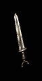
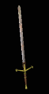

| One-Handed Swords |
Min/Max 1h Damage |
Level Requirement |
Min Strength |
Min Dexterity |
Rangeadder |
Durability |
Sockets |
Speed by Class |
Quality Level |
 Falcata
Falcata
|
31 to 59 (45 Avg) |
42 |
150 |
88 |
0 |
24 |
2 |
[0]
Ama, Asn, B, D, N, P - Fast
S - Normal |
56 |
 Ataghan
Ataghan
|
26 to 46 (36 Avg) |
45 |
138 |
95 |
0 |
22 |
2 |
[-20]
Ama, Asn, B, D, N, P - Very Fast
S - Fast |
61 |
 Elegant Blade
Elegant Blade
|
33 to 45 (39 Avg) |
47 |
109 |
122 |
0 |
32 |
2 |
[-10]
Asn, P - Very Fast
Ama, B, D, N, S - Fast |
63 |
 Hydra Edge
Hydra Edge
|
28 to 68 (48 Avg) |
51 |
142 |
105 |
0 |
32 |
2 |
[10]
Asn, P - Fast
Ama, B, D, N, S - Normal |
69 |
 Phase Blade
Phase Blade
|
31 to 35 (33 Avg) |
54 |
25 |
136 |
1 |
Indestructible |
6 |
[-30]
Ama, Asn, B, D, N, P, S - Very Fast
|
73 |
 Conquest Sword
Conquest Sword
|
37 to 53 (45 Avg) |
58 |
142 |
112 |
0 |
32 |
4 |
[0]
Ama, Asn, B, D, N, P - Fast
S - Normal |
78 |
 Cryptic Sword
Cryptic Sword
|
5 to 77 (41 Avg) |
61 |
99 |
109 |
1 |
44 |
4 |
[-10]
Asn, P - Very Fast
Ama, B, D, N, S - Fast |
82 |
|

Mythical Sword
|
40 to 50 (45 Avg) |
66 |
147 |
124 |
1 |
44 |
3 |
[0]
Ama, Asn, B, D, N, P - Fast
S - Normal |
85 |
| Two Handed Swords |
Min/Max 1h Damage
(Barbarian Only)
| Min/Max 2h Damage
| Level Requirement
| Min Strength |
Min Dexterity |
Rangeadder
| Durability
| Sockets
| Speed by Class
| Quality Level |

Legend Sword
|
22 to 56 (39 Avg) |
50 to 94 (72 Avg) |
44 |
175 |
100 |
2 |
44 |
3 |
[-15]
Ama, Asn, B, P - Very Fast
D, N, S - Fast
|
59 |

Highland Blade
|
22 to 62 (42 Avg) |
67 to 96 (81.5 Avg) |
49 |
171 |
104 |
2 |
50 |
4 |
[-5]
Ama, Asn, B, D, N, P, S - Fast
|
66 |

Balrog Blade
|
15 to 75 (45 Avg) |
55 to 118 (86.5 Avg) |
53 |
185 |
87 |
2 |
50 |
4 |
[0]
Ama, Asn, B, D, P, N - Fast
S - Normal |
71 |

Champion Sword
|
24 to 54 (39 Avg) |
71 to 83 (77 Avg) |
57 |
163 |
103 |
2 |
40 |
4 |
[-10]
Asn, P - Very Fast
Ama, B, D, N, S - Fast
|
77 |

Colossus Sword
|
26 to 70 (48 Avg) |
61 to 121 (91 Avg) |
60 |
182 |
95 |
2 |
50 |
5 |
[10]
Asn, P - Fast
Ama, B, D, N, S - Normal |
80 |

Colossus Blade
|
25 to 65 (45 Avg) |
58 to 115 (86.5 Avg) |
63 |
189 |
110 |
2 |
50 |
6 |
[5]
Ama, Asn, B, P - Fast
D, N, S - Normal |
85 |